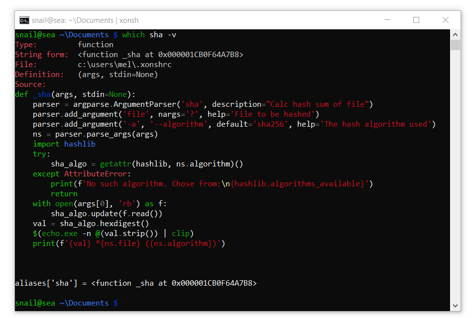

Windowsガイド¶
インストール¶
簡単な方法¶
XonshをWindowsにインストールする最も簡単な方法は Anaconda Python ディストリビューション と conda パッケージ マネージャーを通す方法です。
注釈
Xonshは古いPython(2.7)をサポートしていません。
以下のコマンドでXonshをインストールします。
> conda config --add channels conda-forge
> conda install xonsh
これでxonshと推奨される依存パッケージをインストールします。次に、xonshを実行します。
> xonsh
snail@home ~ $
ソースからインストール¶
Windows上でXonshをソースからインストールするには、まず Python v3.4+ をhttp://python.org からインストールします。 インストール中に "Add python to PATH" を選択することをおすすめします。
次に、prompt_toolkit 依存を pip でインストールします:
> pip install prompt-toolkit
Githubから最新の xonsh-master.zip をダウンロードして xonsh-master に解凍します。
Xonshをインストールします:
> cd xonsh-master
> python setup.py install
次に、xonshを実行します:
> xonsh
snail@home ~ $
使い方¶
カラースタイル¶
Windowsのデフォルトの端末では暗い赤と青は全く読めません。

色を設定する方法はありますが（下記参照）、新しいユーザーに最高の体験を提供するために、Xonshには色を修正するためのいくつかのトリックがあります。これは $INTENSIFY_COLORS_ON_WIN 環境変数によって制御されます。これはデフォルトで True です。
Windows 10の場合
Windows 10は端末でトゥルーカラーをサポートしています。なので、Windows 10 のXonshは端末の色の代わりにハードコードされたスタイルを使用します。
{kind=link}
古いWindowsの場合
古いWindowsではXonshは他のアプローチを取り、読みにくい暗い色のいくつかを読みやすいものに置き換えます。(例えば青はシアンになります)
端末の色の設定
Windowsコンソールを読みやすいデフォルトの色で設定することは可能ですが、手動で行うのは面倒です。 Microsoftのコンソールチームは、端末の色を設定するための便利なツール を作りました。
GitHubから Colortoolをダウンロード
より良い色が設定されている場合は、コンソールで色を制御できるように $INTENSIFY_COLORS_ON_WIN を False に設定する必要があります。 これを行うには、Xonsh実行制御ファイル .xonshrc に以下を追加します。
$INTENSIFY_COLORS_ON_WIN = False
作業ディレクトリをロックしない¶
Pythonは(Windows上の他のプロセスと同様に)現在の作業ディレクトリをロックするので、削除したり名前を変更したりすることはできません。 cmd.exe にもこのような動作がありますが、シェルにとっては非常に面倒です。
xonshの free_cwd xontrib（アドオン）はこの問題のいくつかを解決します。 シェルがアイドル状態のときはいつでも、プロンプトをフックして現在の作業ディレクトリをルートドライブフォルダにリセットします。 これはprompt-toolkitバックエンドでのみ機能します。その動作を有効にするには、次のコマンドを実行します。
この行を ~/.xonshrc に追記することで常に有効にできます。
>>> xontrib load free_cwd
名前空間の競合¶
Pythonの dir ビルトインとのあいまいさのため、cmd.exe ビルトインを介して現在のディレクトリを一覧表示するには、次のように明示的に . を要求しなければなりません。
>>> dir .
Volume in drive C is Windows
Volume Serial Number is 30E8-8B86
Directory of C:\Users\snail\xonsh
2015-05-12 03:04 <DIR> .
2015-05-12 03:04 <DIR> ..
2015-05-01 01:31 <DIR> xonsh
0 File(s) 0 bytes
3 Dir(s) 11,008,000,000 bytes free
多くの人が dir コマンドのために d エイリアスを作成して入力を節約し、あいまいさを完全に避けます。
>>> aliases['d'] = ['cmd', '/c', 'dir']
~/.xonshrc にエイリアスを追加して、 xonsh の起動時にエイリアスを常に使用可能にすることができます。
WindowsのUnicodeサポート¶
Pythonのutf-8 Unicodeは、Windows上のデフォルトのシェル 'cmd.exe'と互換性がありません。 パッケージ win_unicode_console はこれを修正します。 Xonshがインストールされている場合、Xonshは win_unicode_console を使用します。 これは $WIN_UNICODE_CONSOLE 環境変数で無効/有効にできます。
注釈
Unicodeサポートが有効になっていても、利用可能なシンボルはcmd.exeで使用されているフォントによって異なります。
パッケージ win_unicode_console は、パッケージ名 xonsh[win] を使用するか、またはpipまたはcondaを使用してxonshと一緒にインストールできます。
> pip install win_unicode_console
> conda install --channel xonsh win_unicode_console